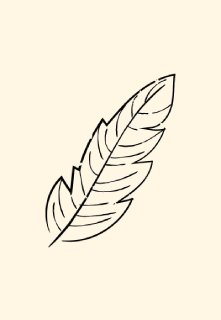

From day one, Quill was built to be as tiny and efficient as possible. Where a normal C ‘Hello, World!’ bloats to ~170 KB, Quill keeps it lean at just 4 KB - 40x smaller!
The Compiler, written in Nim, changes the Quill source files into LLVM IR. This step gives access to the full LLVM ecosystem, including optimization tools, debuggers, and more. This is helps Quill binaries be small and lightweight, as well as having an easy way to debug for developers.
Unlike other compilers, one of Quill's main objectives is to be cross-compatible with almost any architecture, with targets such as x86, ARM, RISCV, and web assembly. This helps the small Quill binaries to run on any platform, even with limited space.
Quill is the language of the future, while some languages can only have
speed, space, or readability, Quill has all three.